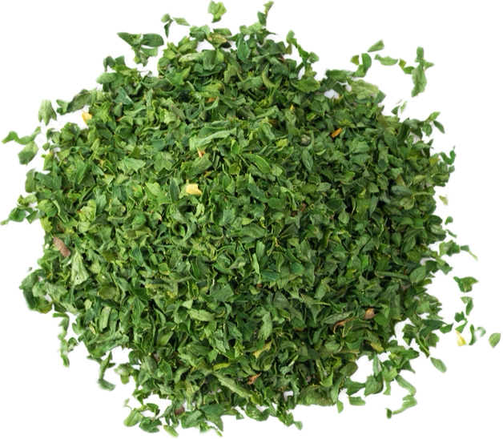

Petroselinum crispum
Overview
Parsley is a biennial herb in the Apiaceae family, native to the Mediterranean region. It has dark green, flat or curly leaves and small white or yellow flowers and is prized for its fresh, grassy flavor and aroma. Parsley is commonly used fresh as a culinary herb and garnish.
Cultural Overlap
Parsley is used in cuisines around the world, particularly in Mediterranean, Middle Eastern, and European cuisines. It is used to flavor salads, sauces, soups, stews, meats, seafood, and vegetables. Parsley also has cultural significance in traditional medicine and folklore, where it is believed to have various health benefits and protective properties.